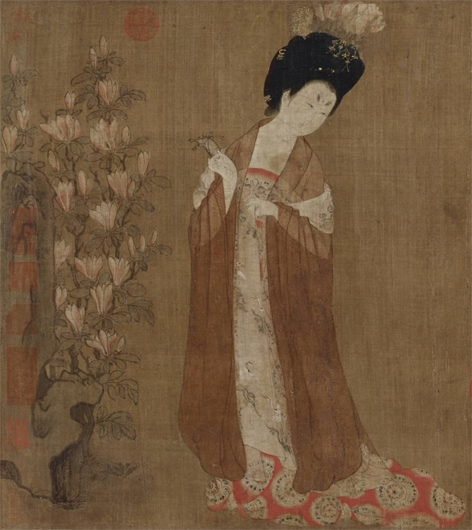
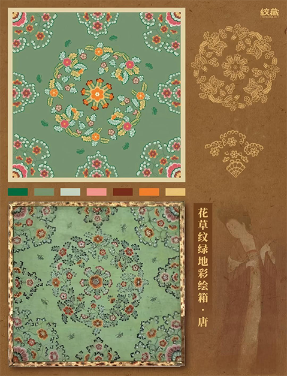
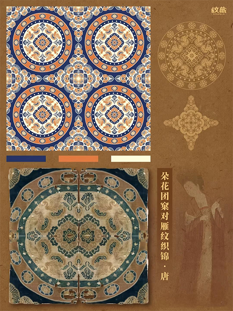

唐代服饰文化
唐朝服饰文化以兼容并蓄、华美开放为特征，体现了盛世气象。受丝路贸易影响，胡服元素盛行，如翻领、革带。织物工艺精湛，
丝绸锦缎普遍使用，纹样融入宝相花、联珠纹等中西合璧图案。女性妆容艳丽，流行花钿、斜红，发髻高耸多样。唐代服饰融合多
元文化，兼具实用性与艺术性，展现开放自信的时代精神。

历史背景
唐朝服饰的多元风格形成于强盛国力与开放环境。政治大一统与胡汉
交融政策促进胡服元素（窄袖、翻领）融入汉服；丝绸之路贸易及手工
业繁荣带来锦缎、薄纱与精湛印染技术。社会开放使女性服饰大胆（低
胸襦裙、披帛），吸收波斯纹饰、印度纱罗，男女装互鉴。盛唐服饰兼
具华丽与实用，高腰宽袖流行，晚唐趋奢。其融合创新深刻影响了东亚
服饰文化，成为中华文明的璀璨代表。
服饰特点
唐朝（618-907年）服饰以华美开放著称，融合胡汉风
格，彰显盛世气象。女性流行高腰襦裙，搭配半臂、帔帛，
衣料轻盈如纱罗，盛行低领袒胸的"袒领装"，色彩艳丽，
纹饰多绣花鸟；男子常穿圆领袍、幞头，受胡风影响盛行窄
袖翻领。贵族服饰多用丝绸锦缎，平民则以麻布为主。安史
之乱后服饰渐趋保守，但唐装仍影响深远，成为东亚传统服
饰的重要源流，体现唐代多元交融的审美特质。
传统纹样
-
 朵花纹，隋唐时期流行纹样。有圆形花蕊，花蕊周围的花瓣，有五瓣、六瓣、七瓣、八瓣组成花朵。多装饰器物的颈部或腹部，有时也插入条纹之间或与草叶纹间隔组成新的纹饰。
朵花纹，隋唐时期流行纹样。有圆形花蕊，花蕊周围的花瓣，有五瓣、六瓣、七瓣、八瓣组成花朵。多装饰器物的颈部或腹部，有时也插入条纹之间或与草叶纹间隔组成新的纹饰。
- 花草纹，唐代纹样中极为常见的一种，通常以牡丹、荷花、忍冬等花草为主题。造型多曲卷圆润，常以“S”形波状曲线排列，构成二方连续图案，给人以生机勃勃、华丽饱满之感。
- 团窠纹，又称团花纹，是一种独特的纹样形式，寓意为鸟兽昆虫的住所。它通过将花卉、鸟兽、器物、人物等元素聚集在一起，形成看似窠巢的圆形或近似圆形的图案。